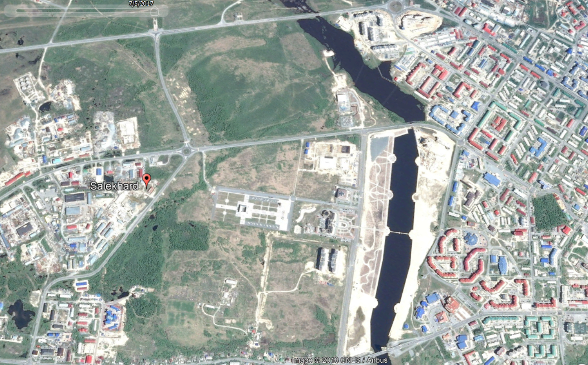
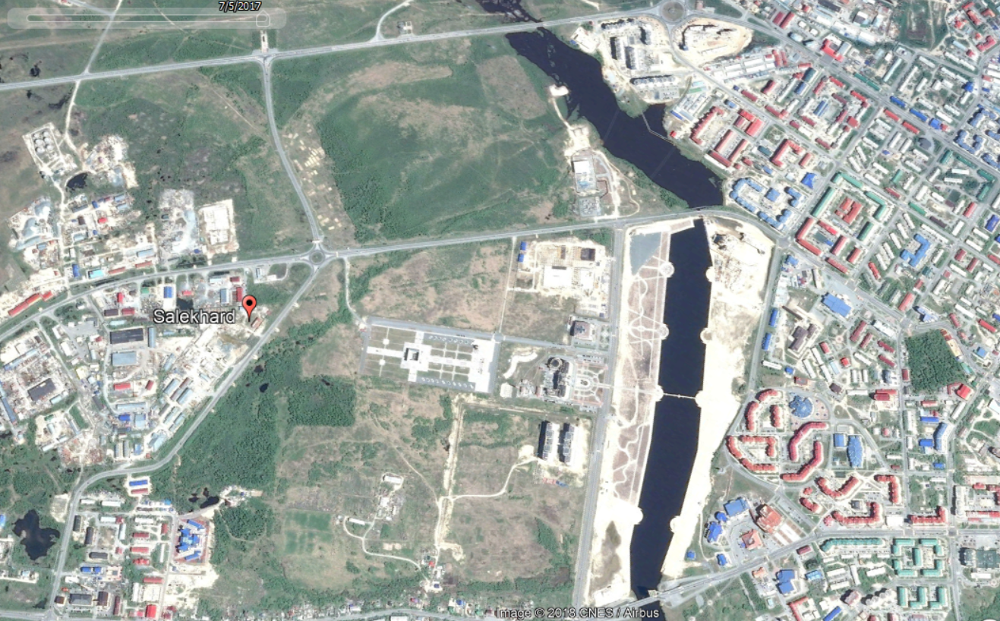

Our journey began on a sleeper train rattling along the ~2,360 km (1,466 miles) railroad from Moscow to the West-Siberian Arctic. The vast tundra landscape was framed in the West by the Ural Mountains, which rose out of the surrounding shrubs and glowed faintly in the 24-hour light of the Arctic summer. During our 40-hour journey, it was impossible to miss the skeletons of old buildings, warehouses, and other signs of large-scale human development dotting the landscape. Old decaying utility poles stood at varying heights and angles as they slowly sunk into the tundra, directly next to contemporary replacements still securely anchored in the permafrost below (Figures 1a, 1b).
As the train halted for one of the many stops, all the passengers piled outside. A group of shift-workers coming from the oil fields waited for the train heading south; a shipment of pipeline segments lay next to the platform, waiting to go north. Some passengers visited a small shop located next to the station, stocking up on ice-cream, beer, and snacks for the journey ahead. Others took their bags and started down a small road running perpendicular to the train tracks. This stop was also special because it marked our official entrance into Siberia. As indicated on the bright signage on an old station house (Figure 2), we were on the continental divide between Europe and Asia, on the crest of the Ural Mountains.
We finally arrived at our destination, only a few kilometers drive and ferry ride across the Ob River from the regional capital of Salekhard. The railroad ends in the city of Labytnangi, with a population ~25,000. There is no bridge across the Ob, which is nearly 2km wide between the cities; only ferries in the summer and an ice-road in the winter. As is typical of the Russian Arctic, Labytnangi is highly urbanized, with buildings densely clustered and perched on stilt foundations anchored deep into the permafrost. There is no bridge across the Ob, which is nearly 2km wide between the cities; only ferries in the summer and an ice-road in the winter. Buildings are connected by small above-ground pipelines carrying water, gas, and communications lines. These adaptations are a purposeful design, meant to isolate the latent heat of infrastructure from thawing the permafrost below and destabilizing the structures (Figure 3). Such engineering adaptations are typical of the Russian North, which has a history of large-scale human development in the Arctic dating back several centuries.
Many areas of Labytnangi showed evidence of recent construction, a sign of the economic prosperity from large oil & gas developments that has benefited the region, Yamal-Nenets Autonomous Okrug (YNAO). Nearby, Salekhard is the major city and capital of the oil & gas rich YNAO. Salekhard has been labeled a ‘crown jewel’ of the Russian Arctic and is one of the richest cities in Russia per capita. The city has only recently been given the status of capital, and since then has been transforming its built environment to live up to that status, with numerous modern buildings, facilities, and plenty of construction. Gazprom, the Russian State-Owned natural gas producer, is highly active in the region and recently opened an LNG export terminal on the Peninsula, connecting the vast resource reserves of YNAO to global markets. Salekhard, as capital of the region, has profited and transformed from this strong economic driver for development.
After a few short weeks in Salekhard, our team boarded another train and headed towards Vorkuta, only ~130 kilometers away, as the crow flies. The journey to this city took us back across the crest of the Ural Mountains, the natural land-border between Europe and Asia, and into the Komi Republic. Vorkuta sits within this administrative region, in the coal-rich Pechora Basin. Upon arrival, the city looked grim, full of empty and deteriorating shells of buildings. As little as 50 years ago, Vorkuta was an economic powerhouse, sitting at the center of a web of 16 highly productive coal mines supplying the Soviet Union with a much-needed energy resource. The supply of coal from Vorkuta was critical during World War II, and the ciy became a symbol of Soviet industrial power.
Today, with that resource no longer in demand, the city has faced hard times. Vorkuta, an important regional hub, and once a city of over 200,000, has declined to 60,000 population, and it is struggling to maintain its services. While the urban core of the city contained architectural hints of the city’s past glory, the harsh reality of crumbling infrastructure was omnipresent.
On the surface, these cities represent complete opposites: Salekhard is a prosperous and growing hub, while Vorkuta is poorer and declining. Yet, these two cities have a long and comparable history. Each city has experienced periods of explosive growth and also decline related to strategic and resource based economic development known as “boom-bust cycles.” (Barenberg, 2014; Heleniak, 2013; Shiklomanov, et al. 2017). Their experience of dynamic cycles’ economic and demographic changes, however, have come at different moments. When viewed historically, the similarities between these neighboring cities development trends become clear, and a comparison yields insights based past economic policy & urban planning that might prevent future blunders.
I argue that urban growth and development plans should be adapted to take into consideration the eventuality that currently growing boom-bust cities will shrink (Hollander et al., 2009). That realization requires encouraging alternative approaches to promoting economic prosperity, ones focused on building capacity for local innovation comparatively independent of national or global economic forces (Petrov, 2016; Zamyatina & Pilyasov, 2016). We first offer a historical comparison between the cities and to provide context for how the cities reached their current contrasting states. Then, the cities’ current socioeconomic and demographic states are contrasted using statistical indicators adapted from the Arctic PIRE Urban Sustainability Index (Suter et al. 2017). The paper concludes with a short discussion of the cities’ current and future challenges as well as recommended materials for further reading on the topic.
Salekhard has hosted a human presence for many centuries. It was originally founded by Russian settlers as a small town called Obdorsk, on the Ob River (Figure 7). The small outpost was established in 1595 following the Cossack conquest of Siberia (Russia, IC 2018). Prisoners were exiled there first under tsars times and again after the October Revolution and the formation of the Soviet Union. Notable religious leaders such as Archbishops Procopius (Titov) and Ambrose (Polyansky) of the Russian Orthodox Church were exiled to Salekhard in the early 20th century (Russia IC, 2018; Wood et al., 1989). When the region was reorganized into the Yamal National District in the 1930s, the village was given city status and renamed Salekhard. Around this time, the idea of using forced labor to colonize and develop remote regions of the Northern Territories was discussed among high-level state and party officials, something that was soon be developed into the Stalin’s network of forced-labor camps – often referred to as the GULAG system (Barenberg, 2014, 17).
In 1930, the geologist Georgii Chernov discovered a seam of high-quality coal on the banks of the Vorkuta River (Figure 8b). In 1931, the first GULAG camp was established nearby on the banks of the Vorkuta River, referred to as the ‘Usa Section’ of the existing Ukhtpechlag. The initial mining camp housed several thousand prisoners and received hundreds more each summer. Nevertheless, its population remained static because the dangerous work and extremely harsh conditions resulted in a high mortality rate (Barenberg 2014, 20-24). Between 1937 and 1938 there were several mass operations within the Soviet Union, during which people labeled as “Anti-Soviet elements” within society were systematically arrested and imprisoned. These operations would come to be known as the “Great Terror,” and resulted in huge increases of the prison populations of Vorkuta. By 1939, the total population of Salekhard was 12,800 (Soldatov et al., 2017) and in Vorkuta the prisoner population alone was at 16,096 (Barenberg 2014, 29).
The strategic demands of World War II accelerated the expansion of Vorkuta, whose mines Stalin recognized as vital to fueling the war effort. These strategic concerns led to massive increases in coal production in the mid-1940s, with production more than doubling between 1942 and 1943. In this same year, the state-run coal mining company Vorkutaugol was incorporated and the city became a company town as well as a prison camp. It drew a non-prisoner population of engineers, managers, and other skilled laborers drawn to relocate by promises of high-wages, spacious living-quarters, and secure jobs. Coal production rose during the war and post-war years. By 1949, the mines around Vorkuta were producing 5.715 million tons of coal annually. To meet these labor demands, many more prisoners were sent to Vorkuta, reaching a total of 60,519 in 1947. These laborers were accompanied by 35,549 non-prisoner population (Barenberg 2014),giving a total population of nearly 100,000 by the end of the decade. Vorkuta virtually sprang out of the tundra in less than 20 years and became a crucial provider of one of Russia’s most important resources (Figure 8c).
Salekhard became the center for another ambitious Soviet infrastrucrure mega-project, called the “Transpolar Mainline.” Originally planned to run from Chum to Novy Port, where a new naval facility was planned, construction began, but then its site was found unfit because of the depth of its bay– The alternate solution was intended to stretch 1,297 km from Salekhard to Igarka, connecting these cities to the railhead of the Russian Rail network (Figure 9a). This would allow for the efficient transport of valuable metal resources from Norilsk, via the Yenisei River, and projected Soviet power across northern Siberia (Mote, 2003). To achieve this goal, a labor detail called the “501st company” began construction eastward from Salekhard, with around 50,000 prison-laborers deployed there by 1949 (GULAG Online, 2018). Over the course of construction, tens of thousands died due to the harsh conditions. Winters were bitterly cold and the annual thaw turned the tundra into a mosquito infested swamp (Figure 9b). This railroad project was typical of Soviet development, characterized by megaprojects and centralized planning without much regard to local conditions. The legacy and impact of Stalin’s Arctic ambitions, manufactured with conscripted labor, manifested directly into the future of both Vorkuta and Salekhard.
The GULAG system was gradually dismantled following the death of Joseph Stalin in 1953, and with it went the factors driving the development of Vorkuta and Salekhard. Released prisoners were faced restrictions on where they could move, and many settled in their former places of internment (Josephson, 2014). In Salekhard, construction on the Transpolar Mainline was immediately halted following Stalin’s death, with officials citing massive cost overruns (GULAG Online, 2018). By the 1960s the railway was primarily used to maintain the utility lines that ran alongside it. Following an initial population decline after the closure of the GULAG, Salekhard’s population began to recover slowly, increasing from 16,567 to 19,000 between 1959 and 1967 (Soldatov et al., 2009). It was not until the 1970s and 1980s, when oil and gas were discovered on the Yamal Peninsula, that this city would see explosive growth. Between 1970 and 1989, the city’s population grew by almost 50%, from 21,929 to 32,334. The discovery of the Bovanenkovo gas field, as well as several other oil and gas fields (Figure 10) spurred interest in further exploration within the Yamal-Nenets region (Kontorovich, 2015). Throughout this time, however, Yamal-Nenets was considered part of Tyumen Oblast and much of the natural wealth of the region flowed south to Tyumen, the capital.
Vorkuta’s experience following the phase-out of the GULAG system was much more turbulent. Its non-prisoners population had steadily increased, and at the time of Stalin’s death almost equalled its prison population (Barenberg 2014). By 1950, a children's hospital was built to serve the growing young population, prisoners began earning a small wage, and there were increased interactions between prisoners and non-prisoners . Loosening regulations ended the segregation between prisoner and non-prisoner populations. In 1956, 29% of the total prison population lived outside the camp walls and many began to earn some pay for their labor (Barenberg 2014, 154). Over a five-year period, 105,000 prisoners were released altogether (Barenberg 2014, 162). Some moved south, but many more stayed, transitioning from life as a prisoner to their new roles in the flourishing Soviet ‘company town’ (Figure 11a).
With the seemingly limitless labor force of the GULAG camps gone, Vorkuta had to attract new populations. The promises of high-wages, secure work, and large apartments were used to lure engineers and other skilled workers to the mines. The 1960-1980s saw significant growth in Vorkuta, with the population expanding to well over 200,000 (Barenberg, 2014). The city worked quickly to house this booming population; the first modern prefabricated buildings went up in 1962. These structures would come to dominate the urban landscape of the city alongside the older neoclassical buildings of the Stalin era (Figure 12); many still standing today. The mines were modernized, and rising production continued to push the physical expansion of Vorkuta. Throughout the 1970s, the mines produced about 20 million tons of coal a year, approximately double that of 1953. During this boom, Vorkuta represented the ideal of Soviet urban planning in the Arctic.
In 1991 the Soviet Union collapsed, undoing the political stability that supported many northern cities, including Vorkuta. The collapse of the centralized state meant no more subsidies for workers, the privatization of many industries, and evaporation of workers savings due to hyperinflation (Barenberg 2014). Nor could the State find willing investors to buy the coal mines which had fueled Vorkuta’s economy. The high costs of unsubsidized production in the Arctic made the investment unattractive to actors in the free market (Barenberg 2014). The 1990s were characterized by numerous strikes and work stoppages as workers protested the economic decline and rampant non-payment of wages. The state-owned mining corporation, Vorkutaugol, partnered with the World Bank to streamline its operations. Many mines were deemed unprofitable and were closed during the 1990s, with the satellite cites that served them often abandoned completely (Figure 13). By the mid-2000s only six of the thirteen mines that had been active in 1991 remained operational.
Those who were able to leave migrated south, and the population of Vorkuta and its satellite cities plummeted to 134,200 by 2002. Many experts predicted that the city would disappear entirely within several years (Barenberg, 2014, 239). In 2003, Vorkuta’s mines were purchased by the international steel-conglomerate Severstal. Though this purchase prompted some economic hope, it did not herald the repopulation of the city. Production rebounded, but the process was increasingly automated and required fewer workers. The city had been planned to serve upwards of 300,000 people (Vorkuta City Planning Office, 2017), and it now served a population less than half of that. After decades of intensive expansion this city faced painful contractions and an austere budget. How Vorkuta continues to address the challenge of shrinking will be critical for its long-term future.
In 2016, there were about 30,301 employees working in Vorkuta, a 37,530 drop from that of 2008 (FSSS, 2018). The number of employees in the mining sector dropped from 9,037 in 2008 to just 6,536 in 2012, which was the last year that records were made available in this sector (FSSS, 2018). High paying mining jobs employed 24% of Vorkuta’s workers in 2008 and decreased to 15% in 2012. As mine layoffs forced many miners and their families to find alternate positions, Vorkuta saw a small spike in the number of total workers. The combined construction and transport sectors employed 14% of workers in 2008 but spiked to 40% in 2012. This transition was indicative of Vorkuta’s new role as a transport hub for shift-workers of the northern oil and gas fields (Orttung et al., 2016) but was also buoyed by huge increases in the federal subsidies to the local budget in 2012 and 2013 (FSSS, 2018). However, these subsidies soon disappeared, and with them, the employment numbers collapsed, falling ~20% just between 2012 and 2014. These factors indicate that Vorkuta is still very much a single-industry city (Zamyatina & Pilyasov, 2016), with the secondary economy highly dependent on the production of coal. Efforts to diversify, such as the modernization of a vocational college, were all still focused solely on coal mining. Public support for the alternative economy – which has been found to be important to promoting a city’s sustainability (Petrov, 2016) – remained relatively weak.
In Salekhard, some of the economic troubles following the collapse of the USSR were partially mitigated by the influx of private investment and continued state support of the natural gas industry. Gazprom, Russia’s largest gas producer, had been founded only two years before the collapse, in 1989. In 1992, the region became an Autonomous Okrug and gained independence from the Tyumen Region, with Salekhard named the regional capital. Much of the wealth that had flowed south to Tyumen now remained in Salekhard, where the regional administrative and corporate headquarters were located. Though Salekhard saw a slight dip in population between 1991 and 1996, its growth soared in the 2000s, with rising oil and gas prices transforming the city into one of the richest in Russia. This massive economic boom attracted migrants from around Russia and Central Asia to work in the gas-fields and secondary economy (Laruelle, 2013).
Salekhard’s economy has always been much more diverse than Vorkuta’s, and the city serves several functions. Even before the gas boom, the city functioned as a fishery, trading post for indigenous goods, transportation hub, and administrative center. This multifaceted economy is still very evident today. In 2012, the earliest year for which records were available, the sectors of public administration and transport accounted for 27% and 14.5% of employment respectively, while the next three largest sectors - real-estate, education, and healthcare – employed another ~10% each (FSSS, 2018).
 

Overall, Salekhard is much more economically diverse than Vorkuta and thus should be better able to mitigate the effects of booms-busts in natural gas prices. However, the city’s economy was altered by the natural gas boom, and the construction sector particularly indisuggests the fragility that plagues even successful Arctic cities. To accommodate the influx of people migrating to Salekhard, massive expansion projects reminiscent of Vorkuta in the 1950s-70s began (Figure 15b). Fancy new apartment blocks went up and a massive urban park, with an artificial river and bridge, were constructed.
In 2009, encouraged by recovering natural gas prices, Salekhard began to expand aggressively,. , The number of construction workers increased two-fold in only a few years (FSSS, 2018). When natural gas prices sank again in 2015, many of these construction projects were either frozen or completely abandoned. Downturns in the price for gas immediately impacted progress on ongoing projects, slowing them to a crawl or halting them completely (Figure 15a). However, Salekhard remains strategically close to resources and poised to boom again as natural gas price rebound amid rising demand from Asia (IEA, 2017).
Increasing economic diversity is critical to the long-term futures of Vorkuta and Salekhard, as it makes the cities’ less dependent on the fluctuating commodity price of a single resource (Reisser, 2016). The larger the proportion of city residents directly involved in one single industry, the more severe the drop in commodity prices, the more severe the effects on the economy and support of the physical infrastructure of the city.
Many researchers have argued that development plans dominated by the interests of a single industry can inhibit the ability of a city to grow naturally through local innovation and production (Zamyatina & Pilyasov, 2016). Vorkuta has already proven that intensive expansion, fueled by a resource boom, can have long-term negative outcomes when infrastructure cannot be maintained (Figure 16). Planning for the future should carefully consider these lessons from the past.
There is a common ideology within Russia that people who live in the Arctic should be able to have access to the same comforts as elsewhere. This applies to social services, such as education and healthcare, and housing. The view is that if the appropriate quality-of-life is achieved, then the city and society will be able to thrive and function. As Vorkuta transitioned from a prison camp to a company town, it was challenged to improve the quality-of-life and housing options for the incoming workers and administrators. When these workers departed due to economic declines, the city was left to maintain and service the remaining physical structures. This put a huge strain on many social services, from public transport to the centralized hot water system, as these far-flung services were funded and maintained by a quickly shrinking tax-base. Due to expansion for a temporary resource boom the city was saddled with a public infrastructure it could not hope to maintain during a bust, something that will continue to impact the social well-being of Vorkuta into the future.
Vorkuta today cannot afford to build any new housing or infrastructure and is instead focused on renovating and maintaining what it can. The city only commissioned 1164.8 square meters of new housing in 2016, not even recording any data between 2009-2015 (FSSS, 2018). Improvements are achieved through the transfer of families from dilapidated buildings on the outskirts (Figure 17) to better maintained buildings in the urban core allowing the city to concentrate its services. The number of people living in dilapidated houses fell from 12,501 in 2008 to 309 in 2016, while the number of families registered as in-need of housing has also dropped from 1,347 in 2008 to 210 in 2016 (FSSS, 2018). Meanwhile, spending on education has nearly doubled since 2006. These statistics show that Vorkuta is shrinking economically, and the overall reach and quality of its social services are declining as a result. To address this, the city is concentrating on maintaining a basic quality-of-life within a concentrated downtown area for the remaining population.
The expectation of comfortable living in the Arctic also affects Salekhard. Since 2006, this city has commissioned an average of 32,850 sq. meters of new housing each year, most of it in the form of modern apartment complexes. However, this city, with a population of 48,756 still had nearly 1,709 families registered as in-need of housing in 2016 (FSSS, 2018), over eight times the number in Vorkuta with its population of 81,442. The natural gas boom combined with a small housing stock drove up living costs for many residents. The number of citizens who received social benefits to supplement housing and utility costs rose from 5,347 in 2008 to 10,255 in 2016 (FSSS, 2018), over 20% of the population. The city also invested heavily in infrastructure, including new theater, religious facilities, luxury hotels, restaurants, and administrative offices. As Salekhard boomed, it focused on improvements to attract a new population. In the event of a bust this population of skilled workers is the most likely to depart to pursue better prospects elsewhere, as occurred in Vorkuta. This calls into question the efficacy of these developments, as the responsibility for the long-term maintenance of these physical structures will likely be passed on to the city in leaner economic times.
While boom-bust cycles have a significant impact on the economic and social stability of these cities, climate-change is playing an increasingly significant role. Climate-change is occurring at an accelerated rate in the Arctic, where temperatures are rising at twice the global average (Serreze & Barry, 2011). These climatic changes are impacting human systems in Salekhard and Vorkuta. Many buildings in these cities are built on permafrost, which has been warming because of climate-change. As permafrost thaws, it decreases ground-bearing capacity and increases ground subsidence, which impacts built infrastructure. These impacts, which include cracked foundations and walls, are visible in the old buildings in the Arctic today and have been projected to be very costly in many regions (Melvin et al., 2016; Shiklomanov et al., 2017; Streletskiy et al. 2019). The trade-off between the short-term economic benefits of fossil fuel extraction and the future costs of mitigating the effects of climate change are complex and will certainly be a long-term issue for these cities.
In short, while planning for growth is important, it is equally important to plan for decline as this will to minimize wasteful development and maximize the local benefits of growth. Sustainability in an Arctic city will look very different from sustainability in most global cities (Orttung et al., 2016). Many might argue that there is no such thing as a sustainable Arctic city, because the region’s development is so closely linked to development fueled by the extractive industry. But Vorkuta has shown that some residents will always remain, even if the resources diminish or disappear. These cities will continue to exist in some form for many years, and thus it is important to further research alternative development paths they could take (Zamyatina & Pilyasov, 2016).
Vorkuta planned for growth until the point of its downturn in the late 1980s and early 1990s (Barenberg, 2014). Though this collapse was exacerbated by outside factors it almost certainly would have happened organically because of the eventual fluctuations in resource commodity prices. Vorkuta was shocked by the intensity of its decline in these initial years and was particularly impacted because city leaders had no plans for such a scenario. This resulted in chaotic decline, residents sometimes forcefully relocated, the mass-flight of skilled workers, and the crumbling of entire neighborhoods. Now that a plan for managed decline has been instituted on a city level, the bust of Vorkuta has turned from a hemorrhagic wound to a slow bleed. While the city is still in decline, it now has a plan to flatten out population decline, maintain the urban core, and restore public services to better serve the remaining population (Vorkuta City Planning Office, 2017). This supports the idea that a planned decline, focused on non-economic outcomes (Hollander et al., 2016), might be the best option for these Arctic cities. Though many experts initially predicted that Vorkuta would entirely disappear (Barenberg, 2014), the institution of a planned decline has resulted in a less catastrophic outlook. While the chances of a full recovery are slim, Vorkuta will be present in some form for many years to come, and because of its contraction and adaptation could become a sustainable city based on a small coal-sector and a locally-oriented economy. These cities rely on the production of fossil fuels and wouldn’t exist in their current form without these resources. Neither is likely to halt their contribution to emissions, nor would their efforts make a hugely notable difference to global emission totals.
The prospects for Salekhard are different, both because of its historical context, but also because of its stage of development in the boom-bust cycle. Salekhard has a more diverse economy, which grew organically out of its historic role as a trading post, transport hub, and administrative center. In the event of a catastrophic bust, this diversity should allay some of the economic and social impacts of a bust. Nonetheless the primary driver for Salekhard’s large-scale development has been an intensive resource boom, and a 2008 bust hurt the city, which awaits price recovery. The evidence of this freeze is evident all around the city, from construction sites, to development billboards touting 2015 completion dates, to luxury hotels serving a single guest. The next upsurge in gas prices is sure to come, and this has many residents optimistic for the future, envisioning a Salekhard with all its development projects completed. This optimism is also echoed in Moscow, which has approved large-scale multi-billion-dollar projects including a bridge over the Ob and a renovated railway between Salekhard and Nadym (Railway Gazette, 2016; Staalesen, 2016). These promises, though ambitious, are likely hollow, reminiscent of the failed Transpolar Mainline. Administrators in the Yamal-Nenets Autonomous Okrug also plan to expand mining operations in the Ural Mountains to promote further development. Salekhard has no plans for a “shrinking city” (Hollander et al., 2016), which could result in it facing a similar situation to what Vorkuta faced decades earlier. The city, though temporarily frozen, is seemingly still “locked-in” the traditional development path, stifling local innovation and sustainable growth (Zamyatina & Pilyasov 2016). However, this stasis should be viewed as unique opportunity to carefully consider the city’s future and long-term urban planning.
The author highly recommends further reading on the subject of Arctic Urban Sustainability (Orttung et al., 2016, Shiklomanov et al., 2017, Suter et al., 2017) as well as the wider context of post-socialism in Russia (Hamilton, 2017), which has been a dynamic field since the 1990s. Furthermore, this article, while dealing with a very specific and unique region, is inexorably linked to the wider global discussion of human-environment interactions (Middleton, 1995). Any interested reader is highly encouraged to utilize the resources referenced in this paper (and beyond) to further develop their understanding of the complex relationships and historical linkages at play.
This work was supported by the “Promoting Urban Sustainability in the Arctic” (NSF Grant # OISE1545913), and the “Belmont Forum Collaborative Research: ARCTIC-ERA: ARCTIC climate change and its impact on Environment, infrastructures and Resource Availability” (NSF ICER Grant #1558389 and #1717770) through The George Washington University. Generous logistical & local support, and additional research resources were provided by the Arctic Science Center in Salekhard, the Yamal-Nenets District Museum, and the Urban Planning Office of Vorkuta.
A personal thanks to Prof. Dmitry Streletskiy, Prof. Nikolay Shiklomanov, and Prof. Robert Orttung of The George Washington University, as well as Prof. Nadezhda Zamyatina and Prof. Valery Grebenets of Moscow State University, for their extraordinary mentorship and support. Thank you also to faculty and peers at the Department of Geography at The George Washington University and Moscow State University for their friendship over the past years. Special thanks to my partner, Katherine O’Brien, for her invaluable time spent editing and proof-reading.
The opinions, findings, conclusions, and recommendations expressed in this paper are those of the author, and do not necessarily reflect the views of NSF. We thank the anonymous reviewers for constructive and insightful comments on this manuscript.